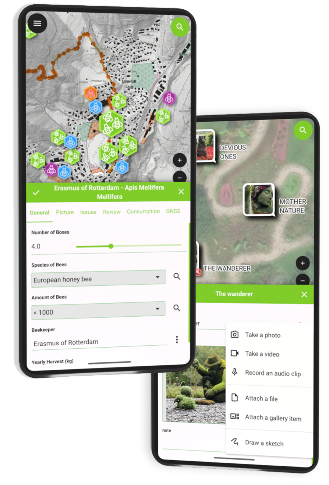
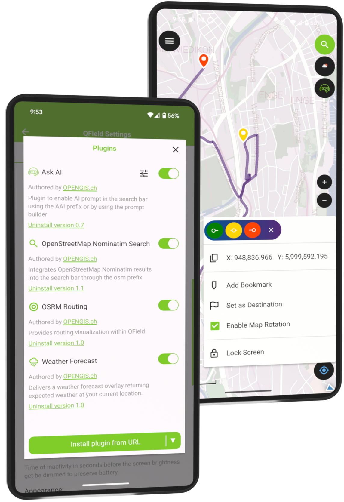
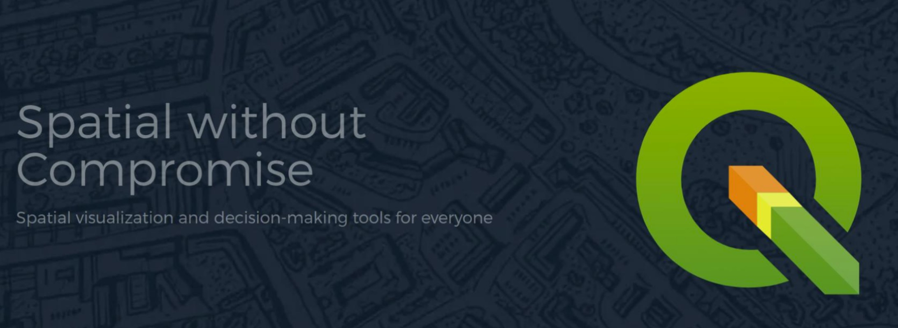
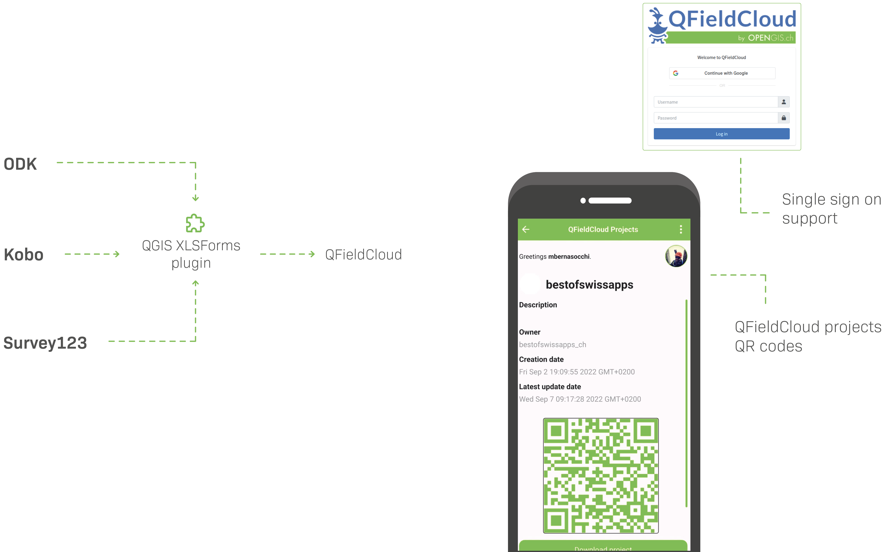

# Who Pays Your Bills? ### Sustainability, Community & Business: ### The Open Source Triangle <br /> <br /> <br /> <br /> Marco Bernasocchi Founder [OPENGIS.ch](https://opengis.ch) · Creator [QField.org](https://qfield.org) · Chair [QGIS.org](https://qgis.org) · VP [OSGEO.org](https://osgeo.org) --- ## The actors ### QGIS[.org] Association behind the leading FLOSS GIS (20M opening/Month)  --- ## The actors ### QField[.org] for QGIS Collect, edit and visualise geodata on the field - DPG - ~2M downloads - 500K Active user per month - Android, iOS, Windows, MacOS, Linux <p></p> --- ## The actors ### OPENGIS.ch Company steering QField and one of the main two contributor to QGIS  --- ## The Question ### "Who pays your bills?" - First thing my now-CTO asked me - Back when we didn’t even know each other - A question that shaped our journey --- ## "Who pays your bills?" ## the brief story of a non-bandit  --- ## The Challenge of Open Source ### Open source is everywhere - Who and how is it funded? - Free = no cost? - Cathedral or Bazaar? --- ## The Open Source Triangle ### Product · Community · Business - How do they combine? - How to push each? - What keeps the triangle sustainably alive?  --- ## Product ### The brain - QGIS / QField → solving real-world problems - Focus on user needs - Doocracy <p></p> --- ## Product ### Vision <img src="./assets/qfield-empowers.png" style="width: 80%;"> --- ## Product ### Vision <p></p> --- ## Community ### The heart - Users, contributors, volunteers, partners, … - Transparency, respect, and trust as currency  --- ## Business ### The legs - Product development - Services: consulting, training, support - Subscriptions: QFieldCloud - Partnerships, memberships, sponsorships, donations --- ## Business ### QGIS · The vibrant bazaar - [QGIS.org](https://qgis.org) governance & funding - Multiple developers - Complete openness - Harder to steer requirements --- ## Business ### QField · The cathedral with bazaar doors - Pushed by [OPENGIS.ch](https://opengis.ch) - Single main developer - Complete openness - Easier to steer requirements --- ## Our Journey ## OPENGIS.ch - Passion turned into a company of ~40 - First hire → the toughest but most defining decision - Along the way: 7 jobs, 20 hats, 1000 decisions but still 0 doubts :)  --- ## SOME ## NUMBERS?  --- ## How We Financed QField - Early client projects funded first features - Cross-financing from consulting & training - Internal investments - Built a subscription model (QFieldCloud) - Reinforced by sponsorships & donations --- ## How We Made QField ## a Success - Focused on real-world use cases from day one - Combined bazaar energy with cathedral clarity - Tight feedback loop with field users - Invested in UX & mobile convenience --- ## Monetise convenience ## not freedom 👉 Not selling free(dom), but convenience & assurance <p></p> --- ## CONNECTING ## THE DOTS <img src="assets/connectingthedots.png" style="width: 45%; height: auto; display: block; margin-top: 130px;" alt="connecting the dots"> --- ## QGIS Sustainability ## Initiative - Launched by OPENGIS.ch to invest in hidden but essential tasks - Funded through support contracts: - Every >10 day contract donates dev time - Unused support hours are donated too - Covers: bugfixing, code reviews, core maintenance, onboarding new devs - Ensures QGIS & QField remain stable, modern, and reliable 👉 Turning client support conviniently into long-term sustainability [opengis.ch/qgis-sustainability-initiative](https://www.opengis.ch/qgis-sustainability-initiative/) --- ## The Open Source Triangle ### Community ↔ Product ↔ Business - Balance creates sustainability - Too much weight on one → instability  --- ## Lessons Learned - Build value first, monetise sustainably - Diversify revenue streams - Keep upstream healthy → business survives --- ## Risks & Mitigations - Key-person risk → team & docs - Financial shocks → reserves & diversification - Fork fatigue → contribute upstream - Be good open-source citizens --- ## Why This Matters Beyond Us - Open source is a real business opportunity with fantastic side-effects - Public money → public code - Developers can make a living while staying open  --- ## Takeaways - Support the open source you rely on - Community pays back - Sustainability is not magic. It’s a loop. - (Good) business models = enablers, not enemies - Monetise convenience, not freedom --- ## Want to know more? ### QGIS User conference and contributor meeting 2026 - 4-9 October 2026 - Laax, Switzerland - conference.qgis.org  --- ## And ## who pays your bills? Thank you 🙏 Questions? <br/> <br/> <br/> [slides.opengis.ch/talk-keynotes/whopays](https://slides.opengis.ch/talk-keynotes/whopays) <br/> <br/> <br/> [@mbernasocchi](https://linkedin.com/mbernasocchi) · [berna.io](https://berna.io) · [OPENGIS.ch](https://opengis.ch) · [QField.org](https://qfield.org)